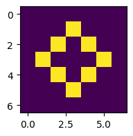
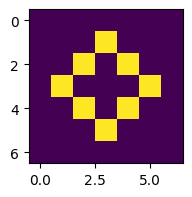

Solutions
Solutions#
Solution to Exercise 5.3
In order to repeatedly apply the 2d average to the array, just repeatedly update the value of the array x using x = moving_average_2d(x). You don’t have to make any changes to the function itself!
Let’s start with a simple example - a 5 by 5 array with a single cell in the centre initally set to 1.
import numpy as np
import matplotlib.pyplot as plt
def moving_average_2d(x):
# create empty array of correct dimensions
n, m = x.shape
result = np.zeros((n, m))
# fill in moving avg
for i in range(1, n-1):
for j in range(1, m-1):
sub_array = x[i-1:i+2, j-1:j+2]
result[i, j] = np.average(sub_array)
return result
# create 5 by 5 grid and set central
# cell to 1
grid = np.zeros((5, 5))
grid[2,2] = 1
print("initial grid:", grid)
# plot the initial grid
plt.figure(figsize=(2,2))
plt.imshow(grid)
# repeatedly apply the function
for i in range(5):
grid = moving_average_2d(grid)
plt.figure(figsize=(2,2))
plt.imshow(grid)
print("Step", i, grid)
initial grid: [[0. 0. 0. 0. 0.]
[0. 0. 0. 0. 0.]
[0. 0. 1. 0. 0.]
[0. 0. 0. 0. 0.]
[0. 0. 0. 0. 0.]]
Step 0 [[0. 0. 0. 0. 0. ]
[0. 0.11111111 0.11111111 0.11111111 0. ]
[0. 0.11111111 0.11111111 0.11111111 0. ]
[0. 0.11111111 0.11111111 0.11111111 0. ]
[0. 0. 0. 0. 0. ]]
Step 1 [[0. 0. 0. 0. 0. ]
[0. 0.04938272 0.07407407 0.04938272 0. ]
[0. 0.07407407 0.11111111 0.07407407 0. ]
[0. 0.04938272 0.07407407 0.04938272 0. ]
[0. 0. 0. 0. 0. ]]
Step 2 [[0. 0. 0. 0. 0. ]
[0. 0.03429355 0.04801097 0.03429355 0. ]
[0. 0.04801097 0.06721536 0.04801097 0. ]
[0. 0.03429355 0.04801097 0.03429355 0. ]
[0. 0. 0. 0. 0. ]]
Step 3 [[0. 0. 0. 0. 0. ]
[0. 0.02194787 0.03109282 0.02194787 0. ]
[0. 0.03109282 0.04404816 0.03109282 0. ]
[0. 0.02194787 0.03109282 0.02194787 0. ]
[0. 0. 0. 0. 0. ]]
Step 4 [[0. 0. 0. 0. 0. ]
[0. 0.01424241 0.02013582 0.01424241 0. ]
[0. 0.02013582 0.02846788 0.02013582 0. ]
[0. 0.01424241 0.02013582 0.01424241 0. ]
[0. 0. 0. 0. 0. ]]

To make it look like the figure in the question, we have to change a few things:
Increase the number of cells.
Use the
imshowargumentsvmaxandvminto change the scaling of the colormap so that its range is between 0 and 1 (rather than the default, which is the maximum and minimum values of each array).Plot all the arrays on a single figure using
plt.subplots(seenotes-subplots-ref).
# Create a large array and set central cells to 1
grid = np.zeros((20, 20))
grid[8:12,8:12] = 1
# Create a figure with 5 subplots
num = 5
fig, axes = plt.subplots(1, num, figsize=(10,2))
# Plot initial grid
axes[0].imshow(grid, vmin=0, vmax=1)
axes[0].axis("off")
for i in range(num-1):
grid = moving_average_2d(grid)
axes[i+1].imshow(grid, vmin=0, vmax=1)
axes[i+1].axis("off")

To make it look identical to the figure, you’d have to use a different diffusion model. See notes-subplots-ref.
Solution to Exercise 5.4
def rule_90(xarray):
n = len(xarray)
result = np.zeros(n)
for i in range(1, n-1):
p = xarray[i-1] # left neighbour
q = xarray[i+1] # right neighbour
# p + q = 1 when
# one of p and q is 1
if (p + q == 1):
result[i] = 1
else:
result[i] = 0
return result
n_cells = 33
n_iterations = 15
x = np.zeros(n_cells)
x[n_cells // 2] = 1 # sets the central cell to 1
automaton = np.zeros((n_iterations + 1, n_cells))
automaton[0,:] = x # set the top row to the initial x
for i in range(n_iterations):
x = rule_90(x)
automaton[i+1,:] = x
plt.imshow(automaton)
<matplotlib.image.AxesImage at 0x7f8ccb075000>
def rule_30(xarray):
n = len(xarray)
result = np.zeros(n)
for i in range(1, n-1):
k = np.sum(xarray[i-1:i+2])
if k == 0 or k == 3:
result[i] = 0
elif k == 1:
result[i] = 1
elif k == 2 and xarray[i-1] == 0:
result[i] = 1
else:
result[i] = 0
return result
n_cells = 33
n_iterations = 15
x = np.zeros(n_cells)
x[n_cells // 2] = 1 # sets the central cell to 1
automaton = np.zeros((n_iterations + 1, n_cells))
automaton[0,:] = x # set the top row to the initial x
for i in range(n_iterations):
x = rule_30(x)
automaton[i+1,:] = x
plt.imshow(automaton)
<matplotlib.image.AxesImage at 0x7f8ccb9f6230>
Solution to Exercise 5.6
First, let’s define the function count_neighbours which returns the number of live neighbours of cell i, j. This is just the sum of the 3 by 3 subarray minus the value of the cell i, j. Note that this function returns a single number, not an array.
import numpy as np
import matplotlib.pyplot as plt
def count_neighbours(x, i, j):
sub_array = x[i-1:i+2,j-1:j+2]
return np.sum(sub_array) - x[i,j]
grid0:
[[0. 0. 0. 0. 0.]
[0. 0. 0. 0. 0.]
[0. 0. 0. 0. 0.]
[0. 0. 0. 0. 0.]
[0. 0. 0. 0. 0.]]
Before we go any further, let’s test it with the initial pattern shown in Fig. 5.7.
grid0 = np.zeros((5, 5))
grid0[2,1:4] = 1
grid0[1:4,2] = 1
print(grid0)
print(count_neighbours(grid0, 2, 2)) # should print 4
print(count_neighbours(grid0, 3, 3)) # should print 3
print(count_neighbours(grid0, 2, 1)) # should print 3
[[0. 0. 0. 0. 0.]
[0. 0. 1. 0. 0.]
[0. 1. 1. 1. 0.]
[0. 0. 1. 0. 0.]
[0. 0. 0. 0. 0.]]
4.0
3.0
3.0
Next we construct the function advance. This function should take an array as input, and return another array as output. We can just adapt the moving_average_2d function.
def advance(x):
# create empty array of correct dimensions
n, m = x.shape
result = np.zeros((n, m))
# fill in array
for i in range(1, n-1):
for j in range(1, m-1):
# count the neighbours of cell i, j
c = count_neighbours(x, i, j)
# implement the Game of Life rules:
# If the cell is dead...
if x[i,j] == 0:
if c == 3:
# ...and has exactly 3 neighbours,
# the cell becomes alive.
result[i,j] = 1
# If the cell is alive...
else:
# ... and has 2 or 3 neighbours,
if c == 2 or c == 3:
# the cell stays alive.
result[i,j] = 1
return result
[[0. 0. 0. 0. 0. 0. 0.]
[0. 0. 0. 0. 0. 0. 0.]
[0. 0. 0. 1. 0. 0. 0.]
[0. 0. 1. 1. 1. 0. 0.]
[0. 0. 0. 1. 0. 0. 0.]
[0. 0. 0. 0. 0. 0. 0.]
[0. 0. 0. 0. 0. 0. 0.]]
[[0. 0. 0. 0. 0. 0. 0.]
[0. 0. 0. 0. 0. 0. 0.]
[0. 0. 1. 1. 1. 0. 0.]
[0. 0. 1. 0. 1. 0. 0.]
[0. 0. 1. 1. 1. 0. 0.]
[0. 0. 0. 0. 0. 0. 0.]
[0. 0. 0. 0. 0. 0. 0.]]
Now we’ll test it on the same initial pattern. I’ve added an extra 1 cell of padding around the edges so the array becomes 7 by 7.
grid0 = np.zeros((7, 7))
grid0[3,2:5] = 1
grid0[2:5,3] = 1
print(grid0)
grid1 = advance(grid0)
print(grid1)
[[0. 0. 0. 0. 0. 0. 0.]
[0. 0. 0. 0. 0. 0. 0.]
[0. 0. 0. 1. 0. 0. 0.]
[0. 0. 1. 1. 1. 0. 0.]
[0. 0. 0. 1. 0. 0. 0.]
[0. 0. 0. 0. 0. 0. 0.]
[0. 0. 0. 0. 0. 0. 0.]]
[[0. 0. 0. 0. 0. 0. 0.]
[0. 0. 0. 0. 0. 0. 0.]
[0. 0. 1. 1. 1. 0. 0.]
[0. 0. 1. 0. 1. 0. 0.]
[0. 0. 1. 1. 1. 0. 0.]
[0. 0. 0. 0. 0. 0. 0.]
[0. 0. 0. 0. 0. 0. 0.]]
z = grid0
plt.figure(figsize=(2,2))
plt.imshow(z)
for i in range(3):
z = advance(z)
plt.figure(figsize=(2,2))
plt.imshow(z)

 

This works, but let’s run it for more steps and plot in a single figure (see notes-subplots-ref):
num = 10
fig, axes = plt.subplots(1, num, figsize=(10,2))
z = grid0
# Plot initial grid
axes[0].imshow(z)
axes[0].axis("off")
for i in range(num-1):
z = advance(z)
axes[i+1].imshow(z)
axes[i+1].axis("off")
Comparing to an online simulator this is correct up to the 5th step. The problem is that our array isn’t big enough, so the rules break down at the edges. Let’s try a bigger array.
z = np.zeros((20, 20))
z[10,9:12] = 1
z[9:12,10] = 1
num = 12
fig, axes = plt.subplots(1, num, figsize=(10,2))
# Plot initial grid
axes[0].imshow(z)
axes[0].axis("off")
for i in range(num-1):
z = advance(z)
axes[i+1].imshow(z)
axes[i+1].axis("off")